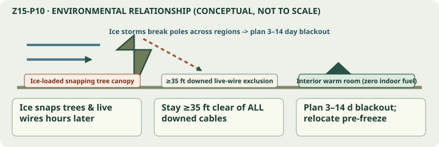

Z15-P10 · Disaster scenarios · New manuscript
Navigate multi-day regional ice-storm blackouts and downed-wire hazards
Protect household occupants from snapping ice-laden branches, energized downed power lines, and prolonged sub-zero heating loss.
When it applies · Freezing rain depositing ¼ to ½+ inch radial ice glaze across trees, power lines, and roadways.
Equipment · Interior warm-room setup, LED lighting, NOAA radio, indoor thermometer, and strict outdoor exclusion awareness.

Actions
- Stay INDOORS away from ice-loaded trees and sagging overhead utility lines during and immediately after an ice storm—even light wind gusts hours after rain stops snap heavy frozen limbs and energized high-voltage cables unpredictably.[D10, D04, E13]
- Recognize that widespread ice storms break thousands of utility poles simultaneously, routinely producing 3-to-14-day blackouts across rural and suburban feeders—conserve battery power immediately, seal off one interior warm room with zero indoor combustion, and monitor indoor temperature closely.[D10, D11, U10]
- Keep at least 35+ feet clear of ANY downed or low-hanging power line, metal fence, puddle, or tree branch touching a cable—assume every downed wire is live and lethal, and call 911/utility immediately.[D04, T01]
Failure recognition · Walking outside under cracking ice-coated oak limbs to drag a fallen branch off a downed neighborhood wire.[D10, D04]
Verify · Confirm family stays indoors away from heavy ice-glazed trees/wires, warm-room insulation active, and relocation threshold monitored.[D10, U10, U17]
Stop or change course · Indoor freezing temps, exhausted medical batteries, or a tree crashing onto the roof/utility mast triggers immediate safe exit away from wires and calling 911.[D10, U17, D04]
Evidence and editorial notes
- D04 · FEMA / Ready.gov · Thunderstorms and Lightning (current web edition)
- Section: Severe Thunderstorms, Straight-Line Winds, Hail, and Lightning · Conditions: Severe Thunderstorm Warnings, derechos, and electrical storms
Support: Move indoors to a substantial building immediately when thunder is heard or severe wind warnings issue; stay away from windows, corded appliances, and plumbing during lightning, and avoid downed limbs and energized downed lines after derechos.
Limitations: Straight-line derecho winds can rival tornado damage across hundreds of miles and cause multi-day regional power blackouts. · Conflicting evidence: None; integrates with E07 and E18.
Editorial note: Grounds severe-storm, hail, and straight-line wind response cards. · Specialist reviewer: Meteorology and utility safety
Primary source · checked 2026-11-24 - D10 · FEMA / Ready.gov · Winter Weather (current web edition)
- Section: Blizzards, Ice Storms, and Multi-Day Freezing Blackouts · Conditions: Blizzard Warnings, Ice Storm Warnings, and extreme wind-chill emergencies
Support: Complete supply, fuel, and medication staging before storm onset, stay off snow/ice-closed roads, prepare safe non-combustion warmth consolidation indoors, keep vents/exits clear of snowdrifts, and evacuate to community warming shelters early if indoor heat fails.
Limitations: Ice storms down overhead power lines and trees simultaneously, delaying utility restoration for days across wide areas. · Conflicting evidence: None; connects Z15 winter disaster response with Z12/Z13.
Editorial note: Grounds winter-storm travel halts and warming-center transitions. · Specialist reviewer: Cold-weather emergency management
Primary source · checked 2026-11-24 - D11 · FEMA / Ready.gov · Power Outages (current web edition)
- Section: Extended Electrical Outages and Cascading Infrastructure Failure · Conditions: Multi-day grid outages disrupting water pumps, fuel stations, ATMs, and telecoms
Support: Recognize cascading grid dependencies: gas station pumps, payment terminals, cell towers, elevators, municipal booster pumps, and medical devices all lose function during prolonged blackouts—maintain cash, vehicle fuel above half-tank, paper contacts, and backup power before storms.
Limitations: Restoring high-voltage transmission and distribution lines follows critical-infrastructure priority order, not first-reported order. · Conflicting evidence: None; anchors cascading-failure scenario planning in Z15.
Editorial note: Drives cascading infrastructure failure and 30-day resilience cards. · Specialist reviewer: Critical infrastructure and emergency management
Primary source · checked 2026-11-24 - E13 · USDA Forest Service · Hazard Tree Safety (agency PDF)
- Section: What You Can Do to Reduce Risk · Conditions: Forest campsites and stops
Support: Look for dead trees and falling material. Stay away from hazardous trees and move away when winds make the site unsafe.
Limitations: Internal decay and root rot can cause live-looking trees to fail in saturated soils or high wind. · Conflicting evidence: Does not specify a universal exclusion radius; tree height and slope govern fall reach.
Editorial note: Prevents false precision on fall-zone distance while requiring overhead screening. · Specialist reviewer: Land management and arboriculture safety
Primary source · checked 2026-11-24 - T01 · American Red Cross · First Aid Steps (current web edition)
- Section: First Aid Steps > Check the scene; check the person · Conditions: Lay responder in United States; assess safety before contact
Support: Check scene safety, responsiveness, breathing and immediately life-threatening conditions.
Limitations: Lay guidance does not replace advanced clinical or rescue protocols. · Conflicting evidence: None; universal first-response opening gate.
Editorial note: Anchors scene-safety-first rule across Z01. · Specialist reviewer: EMS and wilderness medicine
Primary source · checked 2026-11-24 - U10 · FEMA / Ready.gov · Winter Weather (current web edition)
- Section: Winter Household Resilience > Frozen Pipes, Ice Dams, and Heating Loss · Conditions: Sub-zero Upper Midwest winter outages and prolonged cold snaps
Support: Prevent burst pipes by insulating exposed lines, keeping cabinet doors open, shutting off and draining water lines per plumbing guidance if indoor temperatures drop toward freezing, and consolidating household occupants into one safe insulated interior room.
Limitations: Draining hydronic boilers or gas water heaters requires exact manufacturer/plumber steps to prevent equipment damage or gas leaks. · Conflicting evidence: None; regionalizes winter home defense for Minnesota conditions.
Editorial note: Anchors winter pipe protection, thermal-zone consolidation, and abandonment thresholds. · Specialist reviewer: Residential plumbing, HVAC, and cold-weather emergency management
Primary source · checked 2026-11-24 - U17 · FEMA / Ready.gov · Evacuation (current web edition)
- Section: Household Evacuation Thresholds When Utilities Fail · Conditions: Uninhabitable indoor temperatures, sewage backup, persistent CO alarm, or structural/utility hazard
Support: Establish clear pre-agreed exit triggers to relocate to a warming center, hotel, or relatives BEFORE indoor freezing, carbon monoxide alarms, medical-device battery exhaustion, or impassable blizzard roads trap occupants.
Limitations: Waiting until indoor pipes burst or batteries hit zero removes safe travel options. · Conflicting evidence: None; aligns with T13 and E14.
Editorial note: Defines objective household abandonment thresholds in Z13. · Specialist reviewer: Emergency management and cold-weather operations
Primary source · checked 2026-11-24
Source lineage · FEMA Power Outages and NWS Winter Safety; new manuscript · Classification · New manuscript.